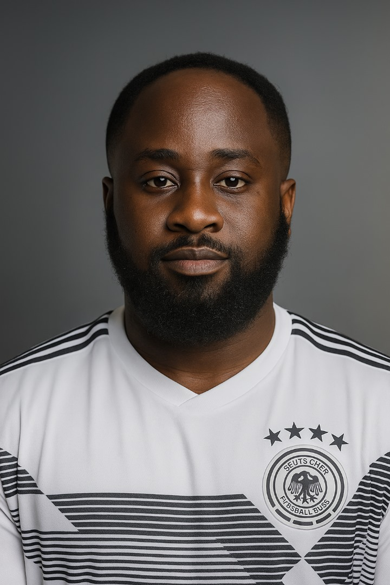

ANTHONY ONYEBUCHI BIOSEH
26 Liberation Stadium Road,
Rumuomasi, Port Harcourt,
Rivers State, Nigeria.
08169589635, 09150548556.
itzbuchz@gmail.com
mrbioseh@gmail.com
SUMMARY
Resourceful and results-driven professional with a unique blend of
healthcare, administrative, and technical expertise. A registered
nurse with strong experience in offshore and industrial healthcare,
complemented by proven skills as a virtual assistant and front-end web
developer. Adept at streamlining processes, delivering exceptional
support, and creating digital solutions to improve workflow and engagement.
Committed to excellence, innovation, and delivering measurable outcomes
across diverse sectors.
EDUCATION
-
Genral Nursing (RN).
College Of Nursing,
Agbor, Delta State, Nigeria.
Graduated: 2013.
-
Full Stack Web Development.
Udemy Online Bootcamp
Expected Graduation: 2025.
-
Virtual Assistant.
Self-Taught On Youtube
Expected Graduation: 2025.
WORK EXPERIENCE
Offshore Medic.
Soso Care Medical Services/Belemaoil Production Limited,
Port Harcourt, Rivers State.
2019 - Present
Key Responsibilities:
- Provided comprehensive medical care to offshore workers,
including emergency response, health assessments, and chronic disease management.
- Regular Medical checkups , health education and surveillance for crew members
- Medical Evacuation of critically ill crew members.
- Managed medical inventory, documentation, and health compliance reporting.
HEAD OF NURSING DEPARTMENT.
Orumba General Hospital Ajalli,
Anambra State, Nigeria.
2018 - 2019.
Key Responsibilities:
-
Oversaw nursing operations, ensuring high standards of patient care and compliance
with healthcare regulations.
- Led a team of nurses, providing training, mentorship, and performance evaluations.
-
Implemented quality improvement initiatives to enhance patient outcomes and
departmental efficiency.
- Patients bill making.
CLINIC MANGER.
St. Barth Hospital, Maternity and Orthopedic Centre
Awka-Etiti, Anambra State, Nigeria.
2016 - 2018
Key Responsibilities:
-
Managed daily clinic operations, including patient scheduling, billing, and
staff coordination.
- Ensured compliance with healthcare standards and regulations.
- Developed and implemented patient care protocols to improve service delivery.
THEATRE HEAD NURSE AND HOSPITAL PATRON.
Multi-Care Hospital, Maternity and Orthopedic Centre,
Umunya, Anambra State, Nigeria.
2014 - 2016
Key Responsibilities:
-
Led surgical teams in operating rooms, ensuring patient safety and adherence to
aseptic techniques.
- Coordinated with surgeons and anesthetists to optimize surgical outcomes.
- Managed patient care pre- and post-surgery, providing education and support.
- Ensured proper maintenance of surgical instruments and equipment.
SKILLS
- Proficient in HTML, CSS, JavaScript, and React.js.
- Experienced in virtual assistance tasks including email management, scheduling, and data entry.
- Strong organizational and multitasking abilities.
- Excellent communication and interpersonal skills.
- Ability to work independently and as part of a team.
- Proficient in Microsoft Office Suite (Word, Excel, PowerPoint).
- Familiar with project management tools (Trello, Asana).
- Basic knowledge of graphic design tools (Canva, Adobe Photoshop).
- First Aid administration
- Preventive care and infection control
- Consultation and case management
- Patients and family health advocacy
- Trauma recovery, rehabilitative care and wound management.
- Medication administration, collation of samples and proper recording of vital signs
- Honesty and reliability
- Devotion to duties
- Respectful and obedient.
HOBBIES
- Reading
- Travelling
- Surfing the internet
- Listening to music and singing
ACCOMPLISHMENT
- Successfully managed the medical care of over 200 offshore workers, ensuring their health and safety.
- Implemented a new patient care protocol that reduced patient wait times by 30%.
- Developed a digital health record system that improved data accuracy and accessibility.
- Recognized for outstanding performance in emergency response during critical incidents.
CERTIFICATION
- Registered Nurse (RN) License
- Basic Life Support (BLS) Certification
- Advanced Cardiac Life Support (ACLS) Certification
-
Record of achievement for emerging respiratory viruses, including
Covid-19; method for detection, prevention, response and control
certificationn
- Covid-19 post-acute care certification (CNA)
- Certified Virtual Assistant (CVA). Pending...
- Full Stack Web Development Bootcamp Completion Certificate. Pending..
REFERENCES
Available upon request.
To see some of my work...
Click this link
Or copy and paste this link into your browser: https://buchz360.github.io/index/
Thank you for viewing my resume.
For any inquiries, please contact me via email or phone.
Have a great day!
© 2025 Anthony Bioseh